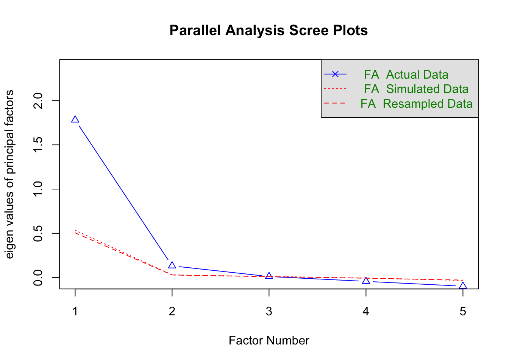

Reliability refers to the consistency of scores produced by a test.
Inconsistency means different scores may be observed for an individual with an unchanged true score when the test was administered more than once.
Scores could be inconsistent in varied ways:
consistency of scores over time
consistency of scores over multiple test forms
consistency of scores across test items
consistency of scores across raters
Reliability should be assessed accordingly.
4.1.1 Split-Half Reliability
An early approach to estimating the reliability of a test was to split the test into two halves and correlate the resulting two scores.
This approach mimics that of correlating scores on two parallel forms of a test, or on two scores from the same test obtained at different times, but it can be used in situations where neither scores from two test forms nor scores from two test administrations are available.
One acceptable way to split a test is to randomly assign items to one or the other half of the test. Another acceptable way to split a test is to assign odd-numbered items to one half of the test and even-numbered items to the other half.
How to Calculate Split-Half Reliability
administer the test to a single sample of individuals
The entire set of items is then divided into two equally sized halves, with the intent that the halves are equivalent in terms of item difficulty, item content, and location in the instrument itself (i.e., near the front, in the middle, or near the end)
The two halves are then scored individually
The correlation between the halves is thus an estimate of the reliability of these shortened parallel forms of the measure
adjust the correlation between the halves in order to reflect the reliability of the full instrument with the current sample. This can be done via the Spearman-Brown prophecy formula \[\rho_{\text{full test}}=\frac{2\rho_{\text{shortened test}}}{1+\rho_{\text{shortened test}}}\]
4.1.2 Cronbach’s \(\alpha\)
Cronbach’s \(\alpha\) is probably the most popular internal consistency index, reflecting the degree to which a set of items is interrelated.
The (raw or unstandardized) \(\alpha\) coefficient can be calculated by:
where \(J\) is the test length, \(\hat{\sigma}_{k}^2\) the variance of scores on item \(j\), and \(\hat{\sigma}^2\) the variance of the test scores and \(\bar{\sigma}_{jj'}\) the average covariance of all items.
Cronbach’s \(\alpha\) may be thought of as the mean of all possible split-half correlations, corrected by the Spearman-Brown formula (As a result, split-half should not be used).
unstandardized \(\alpha\) should be used when raw item responses are used and standardized \(\alpha\) should be used when standardized item scores are used (Falk, 2011)
4.1.3 McDonald’s \(\omega\)
McDonald’s \(\omega\) is another measure for internal consistency, reflecting the degree to which a set of items is interrelated.
Conceptually, McDonald’s \(\omega\) is calculated as
Computationally, McDonald’s \(\omega\) is often calculated based on confirmatory factor analysis.
Recommended Values for internal consistency
Raykov (2011) recommend values of at least .80
Nunnally (1978) recommend values of .70 for scales in the initial stages of development; .80 for “basic research scales,” and .90 as minimum for use in clinical settings
4.1.4 Reliability in R
We will use the bfi dataset from the psych package, which contains item responses to Big Five personality items on a 1-6 Likert scale to show how to compute reliability in R. The dataset has 25 items, with 5 items for each of the Big Five traits: Extraversion (E), Agreeableness (A), Conscientiousness (C), Neuroticism (N), and Openness (O). To keep the example focused, we will analyze the 5 Agreeableness items (A1 to A5). In practice, you would replace this with your own survey items.
# Run this ONCE if needed:# install.packages(c("psych", "CTT", "tidyverse", "corrplot", "knitr"))library(psych)library(CTT)library(tidyverse)library(corrplot)library(knitr)# Load built-in datasetdata("bfi", package ="psych")# Select Agreeableness itemsA_items <- bfi %>%select(A1:A5)# Keep complete cases for simpler demonstrationA_complete <- A_items %>%drop_na()dim(A_complete)
For Likert scale items, make sure item direction is consistent before computing discrimination, reliability and total score. In this subscale, A1 is reverse-keyed.
# Responses are on a 1-6 scale, so reverse-score with 7 - xA_keyed <- A_complete %>%mutate(A1 =7- A1)head(A_keyed)
# Omega (single-factor approximation for this 5-item example)omega_fit <- psych::omega(A_keyed, nfactors =1)omega_fit$omega.tot
[1] 0.7237244
4.2 Item Analysis
Reliability analysis allows one to check if the test produces consistent scores but it does not provide any insights into the quality of individual items.
Item analysis lets us investigate the quality of these individual items, including in terms of how well they contribute to the whole and improve the validity of our measurement.
4.2.1 Item Discrimination
In general, one would expect that respondents with a high level of knowledge or skill would be more likely to answer an achievement or aptitude item correctly than those with lower levels of knowledge, and vice versa.
Similarly, in noncognitive tests, respondents with a high level of construct would be more likely to agree or disagree a certain statement.
Item discrimination refers to how well an item differentiates between respondents with different levels of the underlying construct.
Item-total correlation: correlation between an item and the total score including that item.
Adjusted item-total correlation (also called corrected item-total or item-remainder): correlation between an item and total score excluding that item.
The adjusted version is preferred because it avoids part-whole inflation. We can use the psych package’s alpha() function to compute these statistics.
raw.r: The correlation of each item with the total score, not corrected for item overlap.
std.r: The correlation of each item with the total score (not corrected for item overlap) if the items were all standardized
r.cor: Item whole correlation corrected for item overlap and scale reliability
r.drop: Item whole correlation for this item against the scale without this item
mean: for data matrices, the mean of each item
sd: For data matrices, the standard deviation of each item
In applied work, adjusted item-total correlations around .30 or higher are often considered minimally acceptable for early scale development, with higher values indicating stronger discrimination.
4.2.2 Reliability Change If Item Deleted
This analysis asks whether the scale would become more or less reliable if an item were removed. If reliability increases after deleting an item, that item may be weakly aligned with the rest of the scale and could be a candidate for removal.
The purpose of factor analytic techniques is to help us understand the number and nature of the dimensions, or factors, underlying a set of variables. In factor analysis, the word ‘factor’ is usually used instead of the word ‘construct’, and we shall follow this convention from now on.
Factor analytic studies address questions such as:
How many factors are there?
What do these factors represent?
If researchers do not know the number of factors measured by the test or the structure of the test, they should use EFA to explore the underlying structure. On the other hand, if researchers hypothesize a particular number of factors that represent distinct aspects of a construct, based on theory or prior research, and write items to measure each factor, they may consider using CFA to confirm whether the data support their hypothesized structure.
Factor analytic methods answer the question, “Why are these variables correlated in the way we observe?” In factor analysis, the answer to this question is that the variables are correlated through a common cause: the factor(s).
4.3.1 Determine the number of factors
Determining the most interpretable number of factors from a factor analysis is perhaps one of the greatest challenges in factor analysis. There are many solutions to this problem, none of which is uniformly the best. Below are some examples:
The eigenvalue-greater-than-one rule, also often referred to as the Kaiser criterion
The Kaiser criterion is one of the oldest and simplest tests for determining the number of factors. One simply performs a factor analysis on the data, extracting as many factors as there are variables but without rotating the factors. The eigenvalues are calculated as usual by summing the squared loadings on each component. One then simply counts how many eigenvalues are greater than 1.0 - this is the number of factors to be used. When used in factor analysis, use of this criterion will typically result in overestimation of the number of factors. Although many statistical software programs report this information, it should never be used.
A problem with the scree test is that it does rely on subjective judgement and may sometimes have several possible interpretations, particularly when the sample size or the ‘salient’ factor loadings are small.
Parallel Analysis
Based on the eigenvalues
Instead of comparing eigenvalues to one, PA compares eigenvalues to the average eigenvalue obtained from sets of randomly generated data
The largest number of factors with actual data eigenvalue greater than simulated data eigenvalue is the number of factors
Simulation studies show that parallel analysis is the most accurate way of determining the correct number of factors to extract. The PA involves checking whether each of the eigenvalues that emerges from a factor analysis is larger than you would expect by chance. Suppose that you gather data on 10 variables and 100 people and factor analyze the results (but without rotating the factors). The factor analysis program will produce a list of eigenvalues, as many eigenvalues as there are variables. Now perform another factor analysis, but, rather than using the data that you have collected, just analyze random data (again using 10 variables, 100 people). You could literally just type in numbers at random into the computer program that you use for factor analysis. Then run the factor analysis again, based on this random data. You would expect the correlations between these random variables to be roughly zero – though some will be a little larger than zero, and some smaller than zero by chance. (The size of your sample will affect how close to zero they are; with a small sample, you might find that some correlations are as large as 0.3 or as small as -0.3; with a large sample, few if any will be above 0.1 or less than -0.1.) This approach, generating lots of sets of data and seeing what happens when you analyze them in a particular way, is known as a Monte Carlo analysis. If all the correlations are zero, no factors are present in the data. But some of the correlations will be greater or less than zero just because of chance sampling variations. The question is whether the eigenvalues from the data are larger than would be expected by chance - that is, from factor analyzing correlations between random numbers.
To assess the number of factors for the data, we used parallel analysis with the psych R package:
library(psych)# parallel analysispsych::fa.parallel(A_keyed, fa ="fa")

Parallel analysis suggests that the number of factors = 2 and the number of components = NA
calculate item discrimination and alpha-if-item-deleted. Interpret the results.
calculate inter-item correlation and draw the correlation plot. Interpret the results.
Source Code
---title: "Psychometric Analysis"---This session focuses on item analysis under Classical Test Theory (CTT) in survey.## Classical Test Theory (CTT) and ReliabilityIn CTT, each person's observed score is decomposed into a true score and randommeasurement error:$$X = T + E$$where $X$ is the observed score, $T$ is the true score, and $E$ is error.Standard CTT assumptions are:$$\mathbb{E}(E)=0 \quad \text{and} \quad \operatorname{Cov}(T,E)=0$$So the observed-score variance can be written as:$$\operatorname{Var}(X)=\operatorname{Var}(T)+\operatorname{Var}(E)$$Reliability is the proportion of observed-score variance attributable to truescore variance:$$\rho_{XX'} = \frac{\operatorname{Var}(T)}{\operatorname{Var}(X)}= 1 - \frac{\operatorname{Var}(E)}{\operatorname{Var}(X)}$$Reliability refers to the consistency of scores produced by a test.- Inconsistency means different scores may be observed for an individual with an unchanged true score when the test was administered more than once.- Scores could be inconsistent in varied ways: - consistency of scores over time - consistency of scores over multiple test forms - consistency of scores across test items - consistency of scores across raters- Reliability should be assessed accordingly.### Split-Half ReliabilityAn early approach to estimating the reliability of a test was to split the test into two halves and correlate the resulting two scores.::: {.note-box .note}This approach mimics that of correlating scores on two parallel forms of a test, or on two scores from the same test obtained at different times, but it can be used in situations where neither scores from two test forms nor scores from two test administrations are available.One acceptable way to split a test is to randomly assign items to one or the other half of the test. Another acceptable way to split a test is to assign odd-numbered items to one half of the test and even-numbered items to the other half.:::**How to Calculate Split-Half Reliability**- administer the test to a single sample of individuals- The entire set of items is then divided into two equally sized halves, with the intent that the halves are equivalent in terms of item difficulty, item content, and location in the instrument itself (i.e., near the front, in the middle, or near the end)- The two halves are then scored individually- The correlation between the halves is thus an estimate of the reliability of these **shortened** parallel forms of the measure- adjust the correlation between the halves in order to reflect the reliability of the full instrument with the current sample. This can be done via the Spearman-Brown prophecy formula $$\rho_{\text{full test}}=\frac{2\rho_{\text{shortened test}}}{1+\rho_{\text{shortened test}}}$$### Cronbach’s $\alpha$Cronbach’s $\alpha$ is probably the most popular internal consistency index, reflecting the degree to which a set of items is interrelated.The (raw or unstandardized) $\alpha$ coefficient can be calculated by:$$\hat{\alpha}=\frac{J}{J-1}\big[1-\frac{\sum_{j=1}^J\hat{\sigma}_{j}^2}{\hat{\sigma}^2}\big]=J^2\frac{\bar{\sigma}_{jj'}}{\hat{\sigma}^2}$$ where $J$ is the test length, $\hat{\sigma}_{k}^2$ the variance of scores on item $j$, and $\hat{\sigma}^2$ the variance of the test scores and $\bar{\sigma}_{jj'}$ the average covariance of all items.- Cronbach’s $\alpha$ may be thought of as the mean of all possible split-half correlations, corrected by the Spearman-Brown formula (As a result, split-half should not be used).- unstandardized $\alpha$ should be used when raw item responses are used and standardized $\alpha$ should be used when standardized item scores are used (Falk, 2011)### McDonald’s $\omega$McDonald’s $\omega$ is another measure for internal consistency, reflecting the degree to which a set of items is interrelated.Conceptually, McDonald’s $\omega$ is calculated as$$\omega=\frac{\text{Signal}}{\text{Signal}+\text{Noise}}.$$Computationally, McDonald’s $\omega$ is often calculated based on confirmatory factor analysis.::: {.note-box .note}**Recommended Values for internal consistency**Raykov (2011) recommend values of at least .80Nunnally (1978) recommend values of .70 for scales in the initial stages of development; .80 for “basic research scales,” and .90 as minimum for use in clinical settings:::### Reliability in RWe will use the `bfi` dataset from the psych package, which contains itemresponses to Big Five personality items on a 1-6 Likert scale to show how to compute reliability in R. The dataset has 25 items, with 5 items for each of the Big Five traits: Extraversion (E), Agreeableness (A), Conscientiousness (C), Neuroticism (N), and Openness (O). To keep the example focused, we will analyze the 5 Agreeableness items (`A1` to`A5`). In practice, you would replace this with your own survey items.```{r load-packages, message=FALSE}# Run this ONCE if needed:# install.packages(c("psych", "CTT", "tidyverse", "corrplot", "knitr"))library(psych)library(CTT)library(tidyverse)library(corrplot)library(knitr)# Load built-in datasetdata("bfi", package = "psych")# Select Agreeableness itemsA_items <- bfi %>% select(A1:A5)# Keep complete cases for simpler demonstrationA_complete <- A_items %>% drop_na()dim(A_complete)head(A_complete)```For Likert scale items, make sure item direction is consistent beforecomputing discrimination, reliability and total score. In this subscale, `A1` is reverse-keyed.```{r score-items}# Responses are on a 1-6 scale, so reverse-score with 7 - xA_keyed <- A_complete %>% mutate(A1 = 7 - A1)head(A_keyed)```To calculate reliability, we can use the `psych` package's `alpha()` and `omega()` functions.```{r reliability-alpha-omega}# Alphaalpha_fit <- psych::alpha(A_keyed)alpha_fit$total$raw_alpha# Omega (single-factor approximation for this 5-item example)omega_fit <- psych::omega(A_keyed, nfactors = 1)omega_fit$omega.tot```## Item AnalysisReliability analysis allows one to check if the test produces consistent scores but it does not provide any insights into the quality of individual items.Item analysis lets us investigate the quality of these individual items, including in terms of how well they contribute to the whole and improve the validity of our measurement.### Item DiscriminationIn general, one would expect that respondents with a high level of knowledge or skill would be **more** likely to answer an achievement or aptitude item correctly than those with lower levels of knowledge, and vice versa.Similarly, in noncognitive tests, respondents with a high level of construct would be more likely to agree or disagree a certain statement.Item discrimination refers to how well an item differentiates between respondents with different levels of the underlying construct.- **Item-total correlation**: correlation between an item and the total score including that item.- **Adjusted item-total correlation** (also called corrected item-total or item-remainder): correlation between an item and total score excluding that item.The adjusted version is preferred because it avoids part-whole inflation. We can use the `psych` package's `alpha()` function to compute these statistics.```{r item-discrimination-manual}alpha_fit <- psych::alpha(A_keyed)alpha_fit$item.stats```Below are the interpretation of each column:- raw.r: The correlation of each item with the total score, not corrected for item overlap.- std.r: The correlation of each item with the total score (not corrected for item overlap) if the items were all standardized- r.cor: Item whole correlation corrected for item overlap and scale reliability- r.drop: Item whole correlation for this item against the scale without this item- mean: for data matrices, the mean of each item- sd: For data matrices, the standard deviation of each itemIn applied work, adjusted item-total correlations around .30 or higher are oftenconsidered minimally acceptable for early scale development, with higher valuesindicating stronger discrimination.### Reliability Change If Item DeletedThis analysis asks whether the scale would become more or less reliable if anitem were removed. If reliability increases after deleting an item, that item may be weakly aligned with the rest of the scale and could be a candidate for removal.```{r alpha-if-deleted}psych::alpha(A_keyed)```### Inter-item CorrelationsInter-item correlations show how strongly items relate to each other.- Very low correlations may suggest an item is off-construct.- Very high correlations may suggest redundancy.```{r interitem-correlation-table}R_items <- cor(A_keyed)round(R_items, 2)``````{r interitem-correlation-plot, fig.width=7, fig.height=5}corrplot(R_items, method = "number", type = "lower")```Average inter-item correlation is also useful:```{r average-interitem}mean_interitem <- psych::alpha(A_keyed)$total$average_rmean_interitem```## Factor AnalysisThe purpose of factor analytic techniques is to help us understand the **number** and **nature** of the dimensions, or factors, underlying a set of variables. In factor analysis, the word 'factor' is usually used instead of the word 'construct', and we shall follow this convention from now on.Factor analytic studies address questions such as:- How many factors are there?- What do these factors represent?If researchers do not know the number of factors measured by the test or the structure of the test, they should use **EFA** to explore the underlying structure. On the other hand, if researchers hypothesize a particular number of factors that represent distinct aspects of a construct, based on theory or prior research, and write items to measure each factor, they may consider using **CFA** to confirm whether the data support their hypothesized structure.::: note-boxFactor analytic methods answer the question, "Why are these variables correlated in the way we observe?" In factor analysis, the answer to this question is that the variables are correlated through a common cause: the factor(s).:::### Determine the number of factorsDetermining the most interpretable number of factors from a factor analysis is perhaps one of the greatest challenges in factor analysis. There are many solutions to this problem, none of which is uniformly the best. Below are some examples:- **The eigenvalue-greater-than-one rule**, also often referred to as the Kaiser criterionThe Kaiser criterion is one of the oldest and simplest tests for determining the number of factors. One simply performs a factor analysis on the data, extracting as many factors as there are variables but without rotating the factors. The eigenvalues are calculated as usual by summing the squared loadings on each component. One then simply counts how many eigenvalues are greater than 1.0 - this is the number of factors to be used. When used in factor analysis, use of this criterion will typically result in overestimation of the number of factors. Although many statistical software programs report this information, it should never be used.::: note-boxA problem with the scree test is that it does rely on subjective judgement and may sometimes have several possible interpretations, particularly when the sample size or the 'salient' factor loadings are small.:::- **Parallel Analysis** - Based on the eigenvalues - Instead of comparing eigenvalues to one, PA compares eigenvalues to the average eigenvalue obtained from sets of randomly generated data - The largest number of factors with actual data eigenvalue greater than simulated data eigenvalue is the number of factors::: note-boxSimulation studies show that parallel analysis is the most accurate way of determining the correct number of factors to extract. The PA involves checking whether each of the eigenvalues that emerges from a factor analysis is larger than you would expect by chance. Suppose that you gather data on 10 variables and 100 people and factor analyze the results (but without rotating the factors). The factor analysis program will produce a list of eigenvalues, as many eigenvalues as there are variables. Now perform another factor analysis, but, rather than using the data that you have collected, just analyze random data (again using 10 variables, 100 people). You could literally just type in numbers at random into the computer program that you use for factor analysis. Then run the factor analysis again, based on this random data. You would expect the correlations between these random variables to be roughly zero – though some will be a little larger than zero, and some smaller than zero by chance. (The size of your sample will affect how close to zero they are; with a small sample, you might find that some correlations are as large as 0.3 or as small as -0.3; with a large sample, few if any will be above 0.1 or less than -0.1.) This approach, generating lots of sets of data and seeing what happens when you analyze them in a particular way, is known as a Monte Carlo analysis. If all the correlations are zero, no factors are present in the data. But some of the correlations will be greater or less than zero just because of chance sampling variations. The question is whether the eigenvalues from the data are larger than would be expected by chance - that is, from factor analyzing correlations between random numbers.:::To assess the number of factors for the data, we used parallel analysis with the `psych` R package:```{r}library(psych)# parallel analysispsych::fa.parallel(A_keyed, fa ="fa")```## Exercise::: callout-tip## Please download the [course survey data](https://wenchao-ma.github.io/Data/) for the following anlaysis.- calculate coefficient alpha and omega.- calculate item discrimination and alpha-if-item-deleted. Interpret the results.- calculate inter-item correlation and draw the correlation plot. Interpret the results.:::